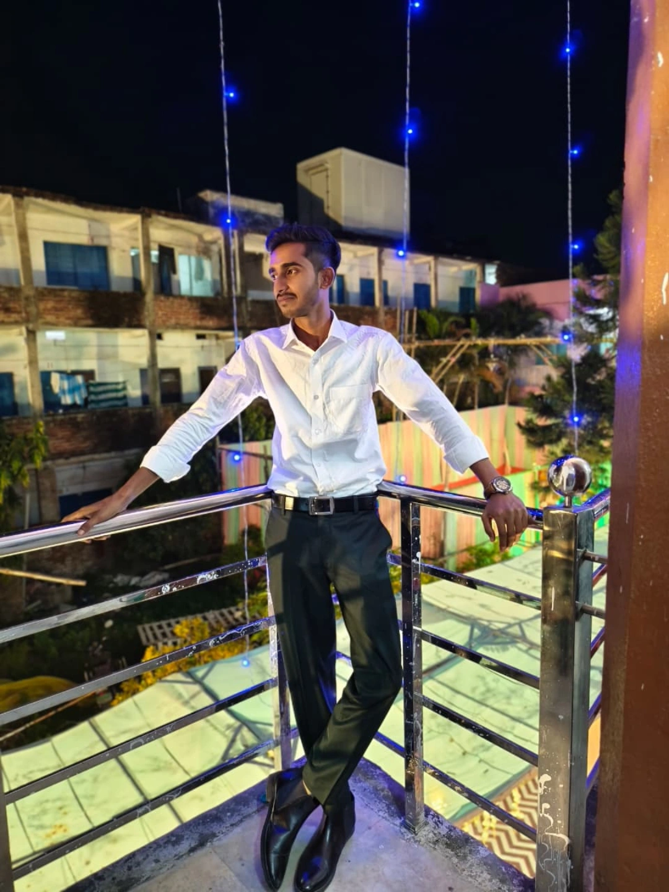

Bachelor of Computer Applications
TH SITM, Al-Karim University
BCA student • aspiring developer
I’m Sheikh Nazrul — a developer exploring web technologies, programming, and data visualization while building practical solutions.

01 — About
I’m looking for opportunities where I can grow as a developer, build practical solutions, and continuously improve my technical skills.
I enjoy learning new technologies, collaborating with teams, and taking on challenging opportunities that help me develop into a strong problem solver.
02 — Toolkit
03 — Featured work
01 / Web platform
Hyperlocal e-commerce platform
Built features including user login, product listing, cart, checkout, vendor inventory, and an admin panel. The project also involved database design and query optimization.
04 — Journey
TH SITM, Al-Karim University
M.B.T.A Islamia H/S, Katihar · BSEB Patna · 61.8%
Children's Happy Home, Rojidpur, Katihar · CBSE Delhi · 52.4%
Excel dashboards, R statistical plotting, and Python visualization libraries including Matplotlib and Seaborn.
05 — Contact
Have a project or opportunity?
If anyone wants to get in touch, send me a message and I’ll get back to you soon.